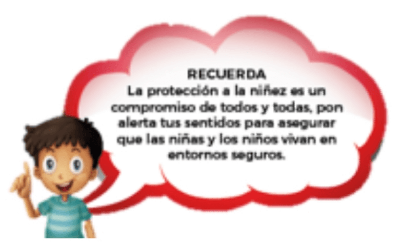

Guia N°4
Lineamientos Generales
Uso correcto de formularios
La calidad de la información está directamente relacionada con la calidad en el uso de los formularios. Un formulario que se llena correctamente, asegurará un manejo eficiente de la información, por tanto te pedimos que presentes atención a los siguientes criterios:
- No dejes espacios en blanco o respuestas incompletas.
- No intentes forzar la información solicitada.
Los formularios tienen formatos de texto de acuerdo al tipo de pregunta, pero es posible que te encuentres preguntas en la que la respuesta es libre. En este caso usaremos el sentido común para dar respuesta la siguiente: ¿Que formato responde mejor esta pregunta? Por ejemplo, si es edad hazlo en “números”, jamás lo has en letras.
Protocolo de asignación de equipo.
El uso de los dispositivos celulares está diseñado para que sean administrados por los CVS en cada una de las ADTs.
Lineamientos para el uso responsable de la información (una mirada de protección a la niñez).
- No compartas información de las familias con ninguna persona que no sea empleado de Ayuda en Acción o empleado de los socios locales, ten presente que esta información debe ser usada única y exclusivamente para los procesos de auspiciamiento.
- Resguarda con celo la información que está bajo tu responsabilidad, no la dejes disponibles al público o en lugares que pudieran ser de fácil acceso para personas ajenas a Ayuda en Acción.
- Solicita por escrito la autorización de padres, madres o tutores legales, el uso y distribución de la información y las fotografías de la niña o el niño auspiciado, con la aclaración que la misma será para uso exclusivo del auspiciamiento.
- No prestes lo dispositivos móviles a nadie que sea externo al personal de Ayuda en Acción o los Socios Locales.
- Reporta de manera inmediata la sospecha o certeza que tengas en relación al extravío o mal uso que se le esté dando a la información de las familias.

Acompañamiento en terreno
Si eres parte de un CVS o si eres parte del personal técnico, siempre podrás contar con asistencia oportuna para asegurar que la recolección de la información sea lo más eficiente posible.
Cuanto estés en la comunidad, recopilando la información con la familia, tendrás la posibilidad de disipar todas tus dudas, para ello podrás hacer de los siguientes mecanismos:
- Consultar tu app sobre KOBO en tu Android.
- Consultar las capsulas informativas en tu dispositivo móvil.
- Consultar con el personal técnico.
- Consultar con el personal de la Oficina Nacional.